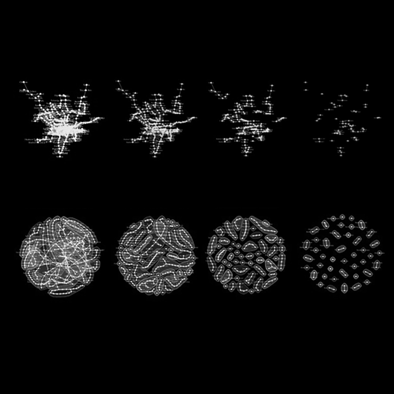

Service design
Service design is about simplifying the deliver of a service (public transport, going to the doctor, banking, etc…) to create a more seamless user experience. As a service designer, I learn about how all types of people experience a given service (particularly the end users), and then help reimagine the service based on their wants and needs. In this way, service design is both a top-down and bottom-up approach to solving problems. Some tools and methods include user journeys, co-creation sessions, and building out physical and digital prototypes.
